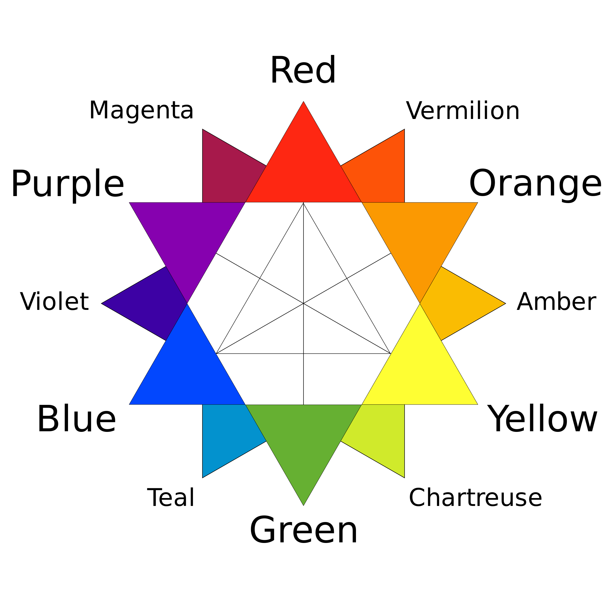

Why not leave Art for the walls?
As an artist is in important to understand what colors are good colors and bad colors. We all have different taste in color but understanding how to achieve those flawless look we must understand the basics.

The Importance of Color Theory for Your Makeup
Often overlooked and usually understudied, color theory is essential for doing your makeup and to understanding what works together (and what doesn’t). Here’s how you can (and should) use it while applying your makeup to help it look a lot more put together.
Color Wheel

The first thing you should familiarize yourself with is the color wheel. It organizes colors into a circular format in their primary, secondary and tertiary (sometimes even higher) order. There are three primary colors: red, blue and yellow. These are colors that cannot be produced through the mixing of two other colors. They are the basis of all other colors.
For example, mixing blue and yellow produces green, a secondary color, like orange (red and yellow) and purple (red and blue). Tertiary colors (brown, turquoise, etc.) are the product of mixing a primary and a secondary color together – you get the gist.
Warm vs Cool
The colors from purple down to chartreuse are cool-toned colors, and those from yellow to magenta are warm. Cool colors have blue undertones and warm colors have red and yellow undertones.
Complimentary vs Analogous
Ever why people with red hair look really good in emerald clothing? Or why the sunset looks so pretty when blue and orange are melting together in the sky? What about trees, or violet flowers, why are they so pleasing to look at?
It’s all because of complementary colors. These are the ones that oppose each other on the color wheel. They are meant to go together; they make things match seamlessly. They are found in everywhere from nature to interior design and, of course, in makeup looks.

Analogous colors are those next to each other on the color wheel. They’re less appealing if used together unthoughtfully. Think blue and purple – not really a breathtaking match.
How is it relevant to makeup?
It’s important to keep a few things in consideration now with this information:
- Your eye color
- Mixing eyeshadow colors
- Matching your eyeshadow and lipstick
With regards to eye color, you’ll now understand why specific colors just seem to not work for you. Brown is adjacent to blue on the color wheel, therefore they’re analoguos colors. They don’t complement each other, the same way they don’t complement blue eyes for the same reason. So, if you’re a fellow brown-eyed girl, stay away from cool colors and you’ll be good to go. There are many online guides for which eyeshadow colors suit your eyes best, make sure you check them out.
Just for the exact same reasons, you don’t want to mix analogous colors (unless you do it on purpose) while putting on eyeshadow. As for lipsticks, it’s usually best to go for either a loud lip or a loud eye. No matter what you choose, make sure you go for complimentary colors. Green eyeshadow look today? Try out a red lip. Feeling blue for your lids? Grab that orange lipstick!
And just remember, all you need to break the rules, is to know them first.
Popular Post


Follow